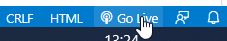
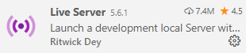
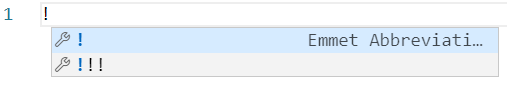

Depois de instalar o Visual Studio Code, para iniciar um novo projecto deverá ser criada uma pasta no sistema operativo (Windows ou MacOS) e depois utilizar a opção Open Folder para identificar essa pasta como página do projecto dentro do Visual Studio Code:
Agora sempre que criarmos um novo ficheiro (File > New File) ele será criado dentro desta pasta.
Os ficheiros HTML têm a extensão .html (preferencialmente) ou .htm.
Existem diversas extensões que nos podem ajudar no dia a dia.
Uma das mais importantes é o Live Server que efectua o refresh da página no browser sempre que guardamos a página.
Pesquise esta extensão através do ícone "Extensions" (lado esquerdo do browser) e clique no botão "install".
Sempre que tiver um ficheiro HTML aberto, aparecerá uma indicação "Go Live" no canto inferior direito. Ao clicar nesse texto automaticamente será aberta a página no browser por omissão.
 Lista de atalhos (combinações de teclas)
Windows - https://code.visualstudio.com/shortcuts/keyboard-shortcuts-windows.pdf
MacOS - https://code.visualstudio.com/shortcuts/keyboard-shortcuts-macos.pdf
O Emmet é um plugin que consiste num conjunto de ferramentas que permite acelerar a programação - o Visual Studio Code já tem integrado este plugin.
Por exemplo, quando criamos um documento HTML basta escrever "!" na primeira linha e carregar em "enter" para ser criada a estrutura base de uma página HTML.
Para criarmos uma tabela com 2 linhas e 3 colunas:
<table><tr><td></td><td></td><td></td></tr><tr><td></td><td></td><td></td></tr></table>
Basta escrever:
table>tr*2>td*3
Cheat Sheet com os comandos disponíveis:
